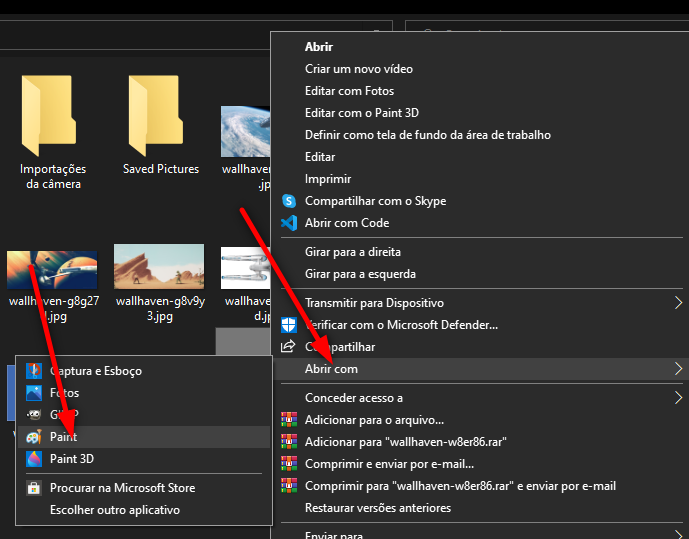

Você já enfrentou problemas para enviar fotos via e-mail por causa do tamanho do arquivo? Isso é um problema mais comum do que você pode imaginar. Agora vou te mostrar duas formas de contornar esse problema de maneira simples.
Forma 1 – Online
O site TinyPNG é uma das ferramentas on-line para comprimir imagens. Com essa ferramenta você precisa apenas fazer o upload de suas imagens e o site vai comprimir para você. Simples assim, sem pagar nada!
E o melhor, você pode comprimir um único arquivo ou várias imagens de uma vez só.
Veja como é simples:
- Acesse o site TinyPNG em seu navegador preferido.
- Quando o site carregar, clique no ícone ao lado do panda simpático.
- Escolha as fotos que você quer comprimir. Lembre-se que o limite é de 20 fotos por vez.
- Quando as fotos estiverem online, o site vai começar a conversão.
- Se você subiu uma única foto, clique na palavra “download” ao lado do nome do arquivo.
- Se você optou por carregar mais de uma foto, clique em “Download All” para baixar um arquivo ZIP contendo todas as fotos comprimidas.

Forma 2 – Offline
Outra maneira de reduzir o tamanho de suas imagens é mudar a resolução das mesmas, mas isso alterará a qualidade das fotos ATENÇÃO!!
No Windows 10, existem diversas formas para fazer isso, nesse texto vou mostrar apenas uma.
Em seu computador há um programa que já vem instalado por padrão, o nome dele é Paint, siga os passos abaixo para reduzir o tamanho de suas imagens.
- Abra a pasta onde está a imagem que você quer reduzir o tamanho.
- Clique com o botão direito do mouse na imagem e selecione o caminho “Abrir com > Paint” 
- Quando a imagem abrir no Paint, selecione a opção “Redimencionar” na parte superior da tela.
- Na janela “Alongar e Distorcer” que abrir, certifique-se que o campo “porcentagem” está selecionado.
- Na opção Horizontal substitua o valor “100” por “80” por exemplo, faça o mesmo no valor correspondente à opção Vertical.
- Clique em “OK” no final da janela para salvar suas alterações.
- Selecione “Arquivo - Salvar como” e escolha entre PNG ou JPEG para salvar sua imagem com o tamanho reduzido.
Texto de Jefferson Lucas